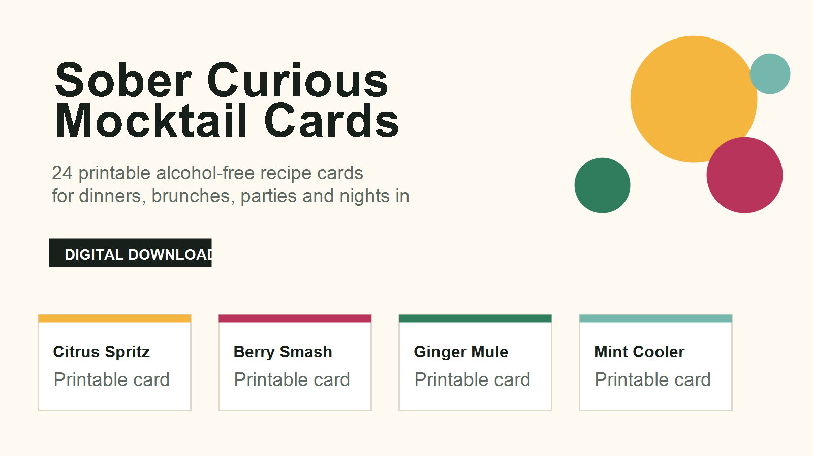
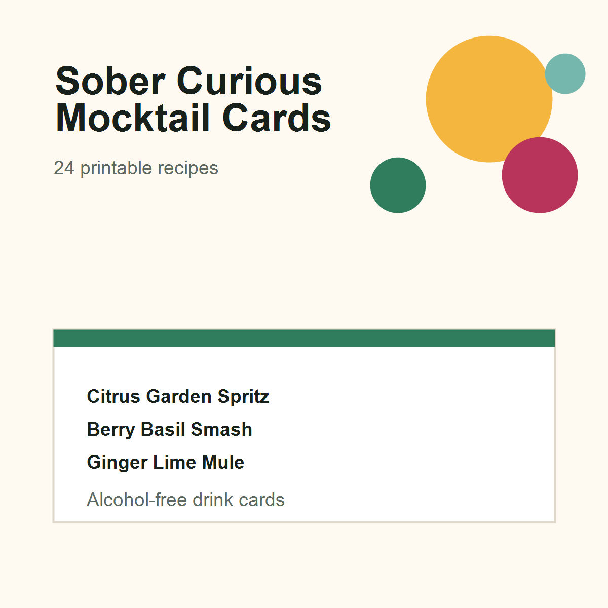

Citrus, berry, herbal, spicy, tropical and coffee-inspired alcohol-free drinks.
Printable alcohol-free drink cards
Sober Curious Mocktail Cards
A printable recipe card pack for hosts who want alcohol-free drinks to feel deliberate, grown-up and easy to serve at dinners, brunches, parties and nights in.

Included
Simple recipes that still feel like hosting
Built as a lightweight printable pack: enough variety for a table, bar cart or event, without needing complex syrups, bartending gear or a huge recipe book.
A4 and US Letter friendly files that can be printed and cut into cards.
A consolidated ingredient list to make prep easier before hosting.
Markdown text version included for adapting recipes to your own taste.

Format
Digital download for sober curious hosting
Includes printable HTML, print stylesheet, editable Markdown, shopping list, README and buyer license. This is lifestyle content, not health, allergy or dietary advice.
More digital downloads
Browse the full catalog
See the other active templates, tools and printables in the zero-cost product portfolio.
Open catalog